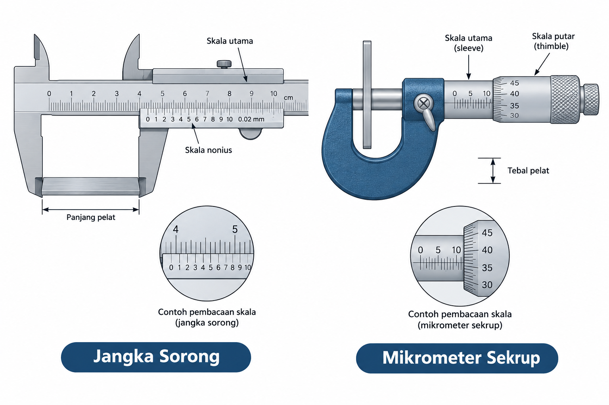

TKA Fisika · Standar Pusmendik
1 / 4
TKA Fisika – Pengukuran & Kinematika Level Analisis
Pemantik 1 · Angka Penting
Sebuah pelat logam diukur tebalnya dengan mikrometer dan panjangnya dengan jangka sorong; lebarnya diukur dengan mistar.

Layar kalkulator siswa:
8,35 × 4,2 = 35,07
❓ Mengapa perkalian luasnya tidak boleh sekadar mengalikan angka yang tertera di kalkulator?
Alat mana yang "membatasi" kepastian hasil? Berapa digit yang layak dilaporkan?
Pemantik 2 · Grafik v–t Dua Kendaraan
Pada t = 0, kendaraan A dan B berada di garis start yang sama. A melaju tetap (GLB), B mulai dari diam lalu dipercepat (GLBB) untuk menyusul A.
Diskusikan: Apakah titik potong grafik pada t = 5 s berarti B sudah menyusul A?
Soal Interaktif TKA
Berdasarkan grafik v–t pada slide sebelumnya, pilih SETIAP pernyataan yang tepat mengenai kondisi kedua kendaraan tersebut.
✅ Jawaban benar: (2) dan (3)
• aB = kemiringan = 10/5 = 2 m/s²; vA = 10 m/s.
• (1) Salah: titik potong grafik v–t = kecepatan sama, bukan posisi sama. Pada t = 5 s: sA = 50 m, sB = ½·2·5² = 25 m.
• (2) Benar: sebelum t = 5 s, vA > vB sehingga jarak pisah terus bertambah; setelahnya menyusut. Selisih maksimum = 50 − 25 = 25 m.
• (3) Benar: 10t = t² → t = 10 s; s = 10 × 10 = 100 m (= luas di bawah grafik yang sama besar).
• (4) Salah: pada t = 10 s, vB = 20 m/s = 2 × vA, sehingga B langsung mendahului A.